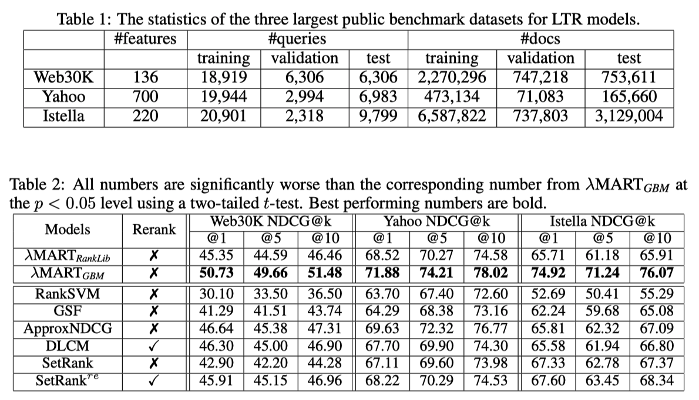

Zhen ICLR’21 Are Neural Rankers still Outperformed by Gradient Boosted Decision Trees?¶
https://openreview.net/forum?id=Ut1vF_q_vC
著者 (全員 Google Research)
Zhen Qin
Le Yan
Honglei Zhuang
Yi Tay
Rama Kumar Pasumarthi
Xuanhui Wang
Michael Bendersky
Marc Najork
概要¶
多くの分野でNNモデルが成功しているが、伝統的なLTRの分野ではまだ有効性は認められていない
まず最初に、最新のNNモデルがGBDTに大差で劣っていることを示す
なぜ neraul LTRがGBDTに劣っているかを調査して、弱点を明らかにし、改善方法を考える
GBDTと同等な性能を発揮するNNモデルを提案する (最新のNNモデルには大勝する)
既存手法のベンチマーク¶
DLCM¶
Learning a Deep Listwise Context Model for Ranking Refinement (SIGIR’18)
何らかのモデルで文書リストを並び替えたものをGRUに突っ込む
GRUの各文書に対するstateと最終stateを使って、最終的な出力とする
{kind=link}
Attention Rank Loss
\(y_i\) : 教師スコア, \(s_i\) 予測スコア
設定と比較手法
初期リストはRank-SVM, LambdaMART (ranklib) で作る
LIDNN : FFNの入力として、文書リストの特徴量をconcatと入れて、出力は文書リストのスコア
入力文書リスト数が40, 各文書の特徴量が700だとすると、入力次元数は28000, 出力次元数は40
文書リスト全体を使える単純なモデルとして用意
{kind=link}
SetRank¶
SetRank Learning a Permutation Invariant Ranking Model for Information Retrieval (SIGIR’20)
Multi-head Self Attention Block (MSAB)使ったやつ

Ordinal EmbeddingはDLCMみたいに初期のランクが与える場合、その文書のランクを入力にしたembedding (詳しく書いてないが、たぶん普通の学習可能なembedding)
Induced Multi-head Self attention Block (IMSAB)
Set Transformer A Framework for Attention based Permutation Invariant Neural Networks (ICML’19) で提案されている
MASBの問題は入力のセットのサイズに敏感であること
学習時と実際に使いときは入力のセットのサイズが違うことが多いので、問題
その問題に対応するために induces multi-head self atteion blockを導入した
{kind=link}
\(I \in \mathbb{RR}^{M \times E}\) は学習可能なパラメータ (Mはハイパーパラメータ)
SetTransformerの論文では、IMSABを導入した理由は計算コストを:math:O(n^2) から \(O(mn)\) に下げるため
なぜ IMSABが↑の問題の解決策になるのか理解できない
実験結果

DASALC論文の実験
{kind=link}
LightGBM最強
DLCM, \(\text{SetRank}^{re}\) は別モデルを使った初期リストが必要だが、DASALC論文ではその初期リストはRanklibのLambdaMARTを使っている
DLCM, SetRankの論文ではRanklibが使われているからと書いてあったが、lightgbmのほうがとても強いといっているので、lightgbmにしてほしかった
NNモデルの弱さ¶
Feature transformation
Zhuang SIGIR’20 Feature Transformation for Neural Ranking Models によると、NNは特徴量変換にセンシティブ (そんなにセンシティブというほどではないのでは..?)
LTR datasetsはアイテムのクリック数などロングテールな分布を持つ多様なスケールの特徴量で構築されている
木構造モデルを用いものは特徴空間を効率的に分割することができて、数値特徴のみをもつデータセットで強い
最近の研究ではガウス正規化よりも優れた変換が示されているが、neural LTRのパイオニア的な論文ではその影響は議論されていない
Network architecture
neural LTRの論文ではアーキテクチャに焦点を当てていないものは、大概FC層を重ねたものを使っている
FC層は高次のインタラクションを捉えるのに非効率的 (以下の論文を参照している)
Deep Cross Network (AdKDD’17)
Latent Cross (WSDM’18)
その問題は広告CTR予測(Deep Cross Network), レコメンデーション(Latent Cross)では注目されているが、LTRでは注目されていない
Data sparsity (特徴量がスパースということではなく、標本数が少ない)
nerural LTRの論文のモデルは小さく、パラメータの多いモデルを使っていない
おそらくoverfitしてしまうから、パラメータの多いモデルにできない
大規模なデータセットは、他のドメインのNNモデルの多くの最近の成功の重要な要因である
publicなLTR データセットは比較的小さい
パラメータの多いモデルでoverfitを回避するためのData augmentationは他領域でもよく使われている
しかし、LTRデータセットではどうData augmentationは直感的でない (CVにおける画像を回転させるとかと比べると)
提案フレームワーク¶
DASALC (Data Augmented SelfAttentive Latent Cross)
Feature Transofrmation
Log1p transformation を使う
(\(\odot\) : element-wise multiplication operator)
Data Augmentation
Gaussian noiseを加える (Log1pのあとに)
特徴量はLog1p変換で正規化されているので、\(\sigma\) を特徴量ごとに変えないのは合理的だと言っている
このようなシンプルなData AugmentationはDASALCだからうまくいって、そうでない場合うまくいかない (実験的に後で示す)
LEVERAGING LISTWISE CONTEXT
LTRでは、文書 :math:x_i のリストをNNモデルに活用できる
-> LTRのNNアーキテクチャを強くするための重要な鍵
-> リスト情報をencodeするために、Multi-head self-attention (MHSA)を使う
普通のDNN(FC-ReLU-BNを重ねたもの)の出力とMHSA側の出力をLaten Crossで統合する
\(a_i\) : MHSA側の出力
\(h_{\text{out}}(x_i)\) : 普通のDNN側の出力
{kind=link}
疑問: リストの順番よって出力が変わってしまうとまずくないですか?
Proposition 1
DASALCの出力スコアは permutationによって変化しない(permutation equivariant), つまり
\(\pi\) : (任意の)文書リストの順番並び替え関数
\(x \in \mathbb{R}^{n \times k}\) : 文書リスト
\(s_{DASALC}(x)\) : DASALCモデルの出力値
として
(MHSAがpermutation equivariantなので by https://arxiv.org/abs/1912.05891 (SetRank論文) )
ロス関数¶
ロス関数はsoftmax cross entropy loss \(l(y, s(x)) = - \sum_{i=1}^n y_i \log_e \frac{\exp(s_i)}{\sum_j \exp(s_j)}\)
pointwise, pairwise, listwiseいろいろな関数を比較したが、robustで性能が良かったから使っているらしい
ロス関数の比較¶
SigmoidCrossEntropy: よく使われているpointwise loss
RankNet (ICML’05): ポピュラーなpairwise loss
LambdaRank (NIPS’07) : \(\Delta NDCG(i,j)\) (iとjを入れ替えたときのNDCGの変化量の絶対値) で重み付けしたpairwise lossで LambdaMART で使われている
Softmax (ICML’07) : ListNet論文のやつ。ポピュラーなlistwise loss
ApproxNDCG (IR’10) : 微分可能にするためにNDCGを近似したもの (listwise loss)
GumbelApproxNDCG (SIGIR’19, WSDM’20) : ApproxNDCGにstochastic treatmentをしたもの.
ApproxNDCGのスコアsにgumbel noise \(g\) を加えたもの (\(s_i + g_i\))
\(g_i = -\log_e(-log_e U_i), ~~ U_i\) uniformly sampled in \([0, 1]\)
NeuralSortNDCG (ICLR’19) NeuralSort trickを使ってNDCGを近似したもの (listwise loss)
GumbelNeuralSortNDCG: NeuralSortNDCGのsにgumbel noise \(g\) を加えたもの
実験による制度比較

モデルは standard feed-forward network
ハイパーパラメータチューニング
Optmizerとlearning rate
Adam (learning rate \(\in \{10^{-4}, 10^{-3}, 10^{-2}\}\) )
Adagrad (learning rate \(\in \{0.01, 0.1, 0.5\}\) )
smooth paramter \(T \in \{0.1, 1, 10\}\)
で NDCG@5でベストだったものをレポート
得られた知見
listwiseがpointwise, pairwiseより良かった
listwiseはどれもcomparableで (本当か?) softmax cross entropyは異なるモデルや異なるデータセットでも一貫して良い性能を発揮していたので、他の実験では使っている
LambdaRankはNNモデルではうまくいかない
一方 Bruch et al ., (SIGIR’19)では、ツリーモデル + Sotfmatx lossはLambdaMARTより弱いと指摘されている
-> ツリーモデルとneural LTRモデルは異なる損失関数で異なる挙動を示す
Approx NDCGについて詳しく¶
DASALC論文では Revisiting Approximate Metric Optimization in the Age of Deep Neural Networks (SIGIR’19) を引用している
ApproxNDCG理論的にもいいし、実験的も強いことを確認している論文
LambdaMARTが出てきた時期に提案されていたので注目されてなかった
その時期はNNを学習するテクニックが発展途上だった
ApproxNDCG再掲
NDCGとはなんだっか
\(r_j\): ランキングのj番目の relevance score
\(g(r_j)\) : gain function (e.g., \(2^{r_j} - 1\) )
\(d(j)\) : discount function (e.g., \(1 / \log_2 (1+j)\) ) (下位ほど値が下がっていく)
\(N_k: ~ \sum_{j=1}^k g(r_j)d(j)\) が最大になるようにランキングの並び替えたときのそれの値
\(\pi(x)\) : 文書xがランキングの何位にいるかを返す関数 (position function)
position functionが微分できないので、これを近似していくわけですが、 指示関数を使って以下のように表現できる
(自分よりスコアの高い文書を数えていくだけなんですが)
where \(s_{x,y} = s_x - s_y\)
指示関数 \(I\) が微分できないわけですが、ここをおなじみのlogistic functionで近似する
\(\alpha=100\) にするとよく近似できているのがわかる
{kind=link}
近似誤差のバウンド
\(s_{x,y} = 0\) (xとyが同じrelevance scoreを持っている)が存在するケースを考えると複雑になってしまうので、以下を仮定する
Theorem 3. 文書集合 \(\mathcal{X}, \forall \alpha > 0\) に対して、以下が成り立つ
where \(\delta_x = \min_{y \in \mathcal{X}, y \neq x} |s_{x,y}|\)
Corollary 4. 文書集合 \(\mathcal{X}, \forall \alpha > 0\) に対して、以下が成り立つ
Table 1の例で確認すると、
Theorem 6. ApproxNDCGの近似誤差は以下のようにバウンドできる
Table 1の例で確認すると \(| \hat{NDCG} - NDCG | < \frac{\epsilon}{2 \ln 2} \approx 0.00085\)
Remark¶
より柔軟なデータ変換の学習 (Zhuang SIGIR’20 Feature Transformation for Neural Ranking Models) や Autoaugment (最適なdata augmentationを探索して見つける) を使わなかった理由
NNモデルがツリーモデルに劣る原因を特定することが目的なので、意図的にシンプル or ポピュラーな手法を使っている (?)
実験¶
ハイパーパラメータチューニング: valid data使ってチューニングする
LambdaMARTGBM (grid search)
the number of trees \(\in \{300, 500, 1000\}\)
number of leaves \(\in \{200, 500, 1000\}\)
learning rate \(\in \{0.01, 0.05, 0.1, 0.5\}\)
DASALC
hidden layer size \(\in \{256, 512, 1024, 2048, 3072, 4096 \}\)
既存研究との顕著な違いは、Data augmentationをする場合4096のような大きなモデルのほうが上手くいく
the number of layers \(\in \{3, 4, 5, 6\}\)
data augmentation noise \(\in [0, 0.5]\) using binary search with step 0.1
the number of attention layers \(\in \{3, 4, 5, 6\}\)
the number of attention heads \(\in \{2, 3, 4, 5\}\)
Main Results
{kind=link}
DASALCはLambdaMARTGBM (lightgbm) と comparable or better
DASALC-ens (学習時のrandomnessを使った3-5 modelsの平均をとったもの) は有意に LambdaMARTGBMより強い
Yahooデータセットでの成績は悪いが、これはYahooデータセットが最初から正規化された状態で公開されていて、その正則化はNNにとって理想的ではない可能性がある (ので、生の状態で公開すべきだ)
LambdaMARTGBMもensembleすると
NNモデルは学習時のrandomnessによって、単純なensembleでも意味があったが
LambdaMARTは毎回似たような結果になってしまって、単純なensembleでは意味がない
-> 異なるtree数, leaf数, 学習率でモデルを作ってensembleしている
{kind=link}
LambdaMARTのensembleはNNのそれよりも改善が小さい
NNのアンサンブルはより強い確率的な性質をもっているので、ensembleがより効果的だったではと主張している
Ablation study

左から右に向かって累積的にコンポーネントを追加
全部突っ込んだやつが強い
{kind=link}
Listwise contextを使ったコンポーネントを入れたとき

普通のDNNだとDeta augmentationの効果がないが、DASALCでは意味がある

LambdaMARTにData augmentationすると、ひどい結果になる

他のLambdaMARTの実装(RankLib),CatBoostと比較した結果
普通にlightgbmが強い